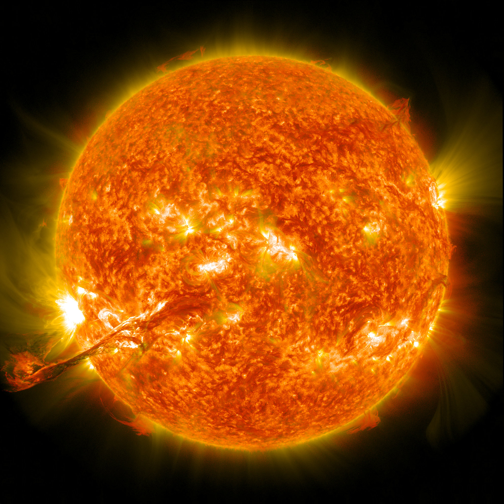

A Nap a Naprendszer központi csillaga. Körülötte kering a Föld, valamint a Naprendszerhez tartozó bolygók, törpebolygók, kisbolygók, üstökösök stb. A Földtől körülbelül 150 millió km távolságra van, ami fénysebességgel 8,3 perc. A Nap tartalmazza a Naprendszer anyagának 99,8%-át, átmérője 109 földátmérő. 73,5%-ban hidrogénből áll, amely a központjában zajló magfúzió során héliummá alakul. Az ennek során felszabaduló, majd a világűrbe szétsugárzott energia nélkülözhetetlen a legtöbb földi élőlény számára: fénye a növények fotoszintézisét, hője pedig az elviselhető hőmérsékletet biztosítja. Éltető ereje miatt a Nap kiemelkedő kulturális és vallási jelentőséggel bír. Fénye és hője mellett különböző tudományágak szempontjából is rendkívül fontos, mert bizonyos jelenségeket nem tudunk mesterségesen előállítani, csak a Napon megfigyelni. Ezek a tudományágak: plazmafizika, magnetohidrodinamika, atomfizika, részecskefizika.
| Távolság a tejútrendsezr magjától | ~2,5·1017 km |
| Átmérő | 1,392·106 km |
| Térfogat | 1,41·1018 km³ |
| Tömeg | 1,9891·1030 kg |
| Gravitácoó | 273,95 m/s² |